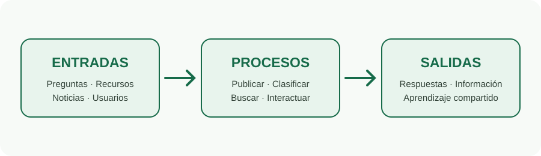

Arquitectura de la solución
La interfaz está construida con tecnologías web estáticas y se publica mediante GitHub Pages. El cliente JavaScript se conecta a Supabase utilizando una clave pública de aplicación.
SIGMA-U recibe aportes de sus usuarios, los almacena y organiza, y los presenta mediante un entorno de consulta e interacción. Su funcionamiento depende de la relación entre personas, procesos, datos y tecnología.

La interfaz está construida con tecnologías web estáticas y se publica mediante GitHub Pages. El cliente JavaScript se conecta a Supabase utilizando una clave pública de aplicación.
PostgreSQL almacena perfiles y actividad comunitaria. Las políticas de seguridad a nivel de fila (RLS) limitan las operaciones según el usuario y su rol. Supabase Storage conserva los archivos de publicaciones y las imágenes de la galería.